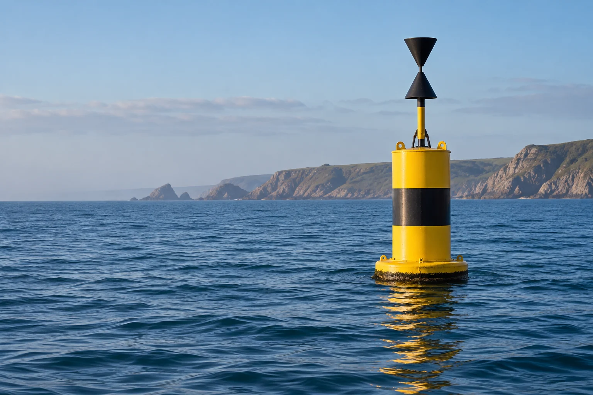
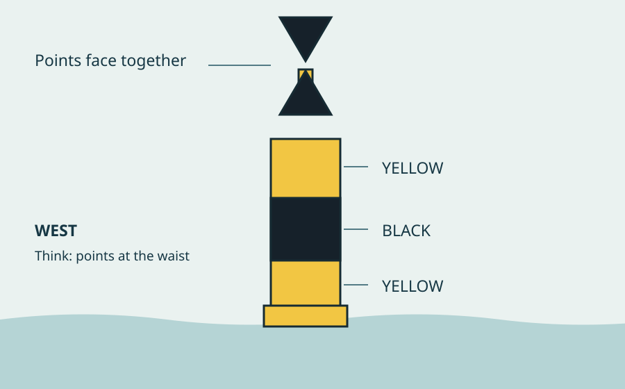

Know the mark.
Understand the water.
Meet the west cardinal. Learn to recognise it by day, count its light by night, and understand which side it indicates.

One mark. Three ways to learn it.
Use the colour bands and topmark together.

Flashing starts only when requested. Stop it at any time.
Yellow. Black. Yellow.
- Body
- Yellow with a broad black middle band
- Topmark
- Two black cones, points together
- Light, when fitted
- White · groups of nine
- Permitted rhythms
- VQ(9) 10s or Q(9) 15s
West is a compass direction.
Not your left-hand side.
The mark indicates that the deepest water in its area lies to its west. Pass to the west of the mark, using your chart and local information to plan the actual track and clearance.
Turning your boat does not change west. Unlike a lateral mark, the meaning does not depend on the direction of buoyage.
A cardinal mark does not guarantee depth everywhere on that side. Check charted dangers, draught, tide and local conditions.
Recognise it. Explain it. Remember it.
Four questions, with an explanation after every answer. Any mistakes return for a focused second pass.
Make the whole system familiar.
Compare all four cardinal marks, then continue into the existing Helmlore library for lateral marks, day/night recognition and guided buoyage practice.
This lesson’s practice stays in this page session. It does not update your signed-in course assessment.
Built around the standard.
Colours, topmarks and light characteristics checked against Trinity House: cardinal mark specifications. Meaning checked against Trinity House: cardinal marks. Reviewed 23 October 2026.
Independent recreational learning. Illustrations simplify a mark’s construction; actual buoys vary. Use current charts and official publications for navigation.